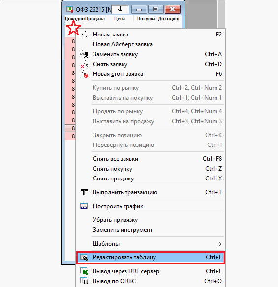

В данной статье я расскажу о том, как настроить ИТС QUIK для работы с российскими облигациями (корпоративными и государственными), дам пошаговый алгоритм действий при построении таблиц, а в конце статьи оставлю ссылку на скачивание готового файла настроек. Итак, поехали…
Для того чтобы увидеть облигации в QUIK, первоначально необходимо настроить списки, через которые терминал будет получать нужные данные. Для этой цели через Меню «Система» выбираем пункт «Заказ данных», далее «Поток котировок», появляется следующее окно.
Исчерпывающий список облигаций представлен в трех списках:
После того, как мы настроили списки, необходимо построить таблицу, в которой будут отображаться текущие торги. Для этого жмем «Создать окно», затем «Текущие торги». Возникнет вот это окно.
Что необходимо настроить, чтобы увидеть облигации в QUIK? Во-первых, между полями «Доступные инструменты» и «Заголовки строк» нажать кнопку «Добавить все», таким образом, абсолютно все бумаги попадут в таблицу «Текущие торги». После этого из доступных параметров выбрать следующие:
После того, как вы нажимаете «Да», появляется таблица, представленная далее. Как уже было сказано, проранжировать таблицу следует по столбцу «Доходность». В ТОПе списка вы увидите самые доходные облигации в QUIK, однако помните, что чем выше доходность – тем выше риск инвестиций в нее.
Биржевой стакан по облигациям можно вызвать путем двойного нажатия кнопки мыши на любую строчку из таблицы «Текущие торги». Только его содержание нужно немного отредактировать. Для этого на области стакана котировок нажимаем правой кнопкой мышки и возникает меню, из которого нужно выбрать «Редактировать таблицу».

Появится следующее окно (см. ниже). Здесь нужно выбрать вид котировочного окна в центре, снять галочку напротив строки «Покупку показывать сверху», а также из доступных параметров добавить «Доходность продажи» и «Доходность покупки».
После совершения данных манипуляций, стакан котировок примет вот такую форму (рисунок далее). Параметры доходности покупки и продажи, которые мы добавили в стакан, означают, какую эффективную доходность вы получите, если совершите сделку по той или иной цене. Очень удобно иметь такую информацию именно в стакане, чтобы понимать, какой доходностью вы готовы пожертвовать при совершении сделки по определенной цене.
Таким образом настраиваются облигации в QUIK, в рассмотренных таблицах отражается исчерпывающая информация, предоставляемая данным терминалом.
Еще одним немаловажным моментом является настройка графика доходности. Например, по государственным ОФЗ она строится следующим образом. В меню выбираем пункт «Создать окно» «Все типы окон». Появится вот это.
Здесь открываем список «Прочее» «График доходности». Возникнет окно, которое приведено ниже. Из доступных инструментов необходимо выбрать нужные нам, например, все ОФЗ, а они находятся в списке «МБ ФР: Т+ Облигации». Если нужно построить график доходности по какому-либо другому эмитенту, то просто выбираем все выпуски интересующего эмитента.
Далее нажимаем «Да» и построится график. Минусом данного способа является то, что нельзя построить среднюю линию (т.е. кривую доходности), однако этот минус можно обойти при помощи программы Excel.
В завершении расскажу, как просматривать информацию по клиентскому счету, а так же где смотреть заявки/сделки. Итак, на новой вкладке «Портфель» через функцию создания нового окна строим пять таблиц.
В таблицах «Заявки» и «Сделки» отразятся все введенные, отмененные, совершенные и активные транзакции с облигациями. В остальных трех таблицах будут показаны данные касательно денежных средств, купленных облигаций, прибыли/убытка, свободных и занятых денег и прочая полезная информация.
Таким образом, мы рассмотрели алгоритм настройки терминала Квик для работы на долговом рынке РФ. Файл настройки облигации в QUIK можно скачать тут. Файл называется obligacii и имеет расширение wnd.